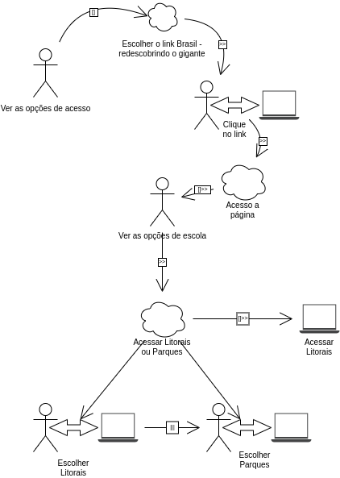

Análise CTT
1 - Árvores de Tarefas Concorrentes (ConcurTaskTrees - CTT)
Esse modelo foi criado para ajudar a avaliação do design e a avaliação de IHC (Paterno, 1999). Existem quatro tipos de tarefa para esse modelo, que são elas:
- Tarefas do usuário: Realizadas fora do sistema
- Tarefas do sistema: O sistema realiza um processamento sem interagir com o usuário
- Tarefas interativas: Ocorre os diálogos usuário com o sistema
- Tarefas abstratas: Uma representação de uma composição de tarefas que auxilie a decomposição
Parecido com a análise hierárquica de tarefas, os diferentes níveis hierárquicos devem ser lidos como "para considerar T1 como tendo sido realizada, as tarefas T2 e T3 devem tersidos realizadas". Tanto as tarefas como a frase em aspas estão sendo representadas na figura 1.

Além disso, o CTT permite representar diversas relações entre as tarefas e os significados dessas relações são:
- Ativação: Significa que a segunda tarefa só pode iniciar após a primeira tarefa terminar (T1 >> T2)
- Ativação com passagem de informação: Especifica que, além de T2 só poder ser iniciada após T1, a informação produzida por T1 é passada para T2 (T1 []>> T2)
- Escolha: Especifica duas tarefas que estejam habilitadas num momento, mas que, uma vez que uma delas é iniciada, a outra é desabilitada (T1 [] T2)
- Tarefas concorrentes: Especifica que as tarefas podem ser realizadas em qualquer ordem ou ao mesmo tempo (T1 ||| T2)
- Tarefas concorrentes e comunicantes: Especifica que, além de as tarefas poderem ser realizadas em qualquer ordem ou ao mesmo tempo, elas podem trocar informações (T1 |[]| T2)
- Tarefas independentes: Especifica que as tarefas podem ser realizadas em qualquer ordem, mas quando uma delas é iniciada, precisa terminar para que a outra possa ser iniciada (T1 |=| T2)
- Desativação: Especifica que T1 é completamente interrompida por T2 (T1 [> T2)
- Suspensão ou(e) retomada: Especifica que T1 pode ser interrompida por T2 e é retomada do ponto em que parou assim que T2 terminar (T1 |> T2)
A figura 2 apresenta um exemplo de cada uma das relações:

Uma das vantagens do CTT é com relação a outros modelos de tarefas, é destacado a possibilidade do registro explícito das relações entre tarefas, entretanto com relação a modelos especificamentes projetados para a interação é a ausência de elementos destinados à representação de mecanismos de prevenção e tratamentos de erros na interação do usuário com o sistema. Na figura 3 está representada um exemplo de modelo CTT de análise de tarefa para um objetivo de marcar um compromisso em uma agenda, obtidos do livro da Simone no cap.8 página 189.

2 - Análise de desempenho do web site Brasil Channel com o CTT
Foi aplicado o modelo de análise de tarefas CTT, sendo o objetivo acessar a página Litoral.
Como no site avaliado as únicas funcionalidade que ele apresenta é acessar os links, a análise de tarefas CTT demonstra um pouco de dificuldade para obter informações importantes sobre as tarefas descritas. Pois para aplicações com diversas funcionalidade, o CTT seria melhor aplicado e o resultado satisfatório na hora de recolher os dados.
Na figura 4 está o modelo CTT representando o objetivo de acessar o Litoral:

Histórico de Versão
| Versão | Alteração | Responsável | Revisor | Data |
|---|---|---|---|---|
| 1.0 | Criação do documento | Levi Queiroz | - | 20/07/2022 |
| 1.1 | Adição do CTT | Levi Queiroz | Lucas | 20/07/2022 |
| 1.2 | Correções no artefato | Levi Queiroz | - | 20/07/2022 |
| 1.3 | Correções no artefato | Levi Queiroz | - | 31/07/2022 |
Referências
- BARBOSA, Simone; DINIZ, Bruno. Interação Humano-Computador, Editora Elsevier, Rio de Janeiro, 2010.